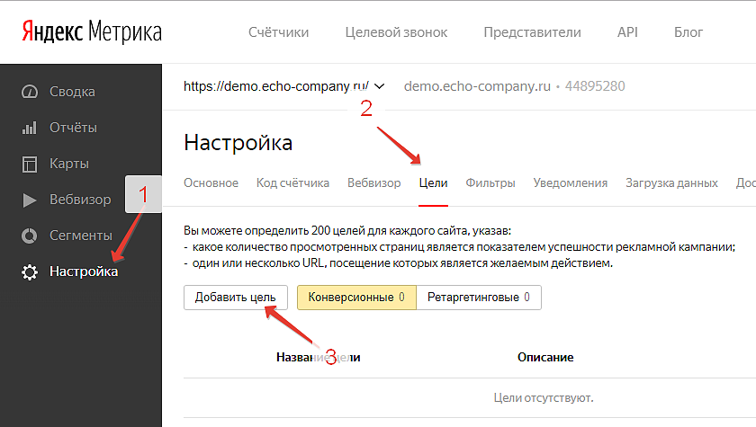
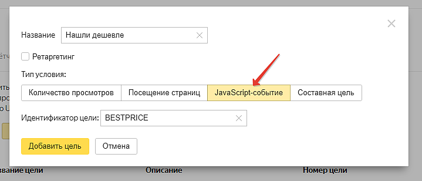
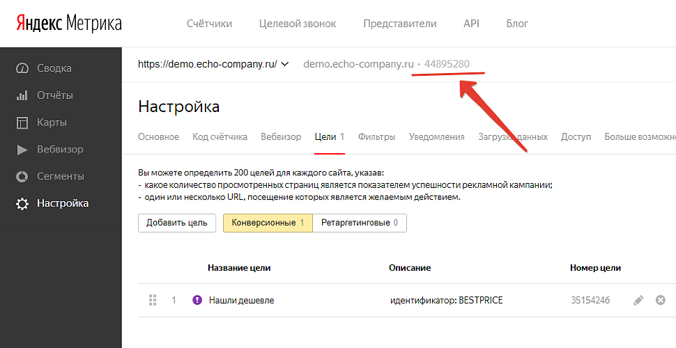
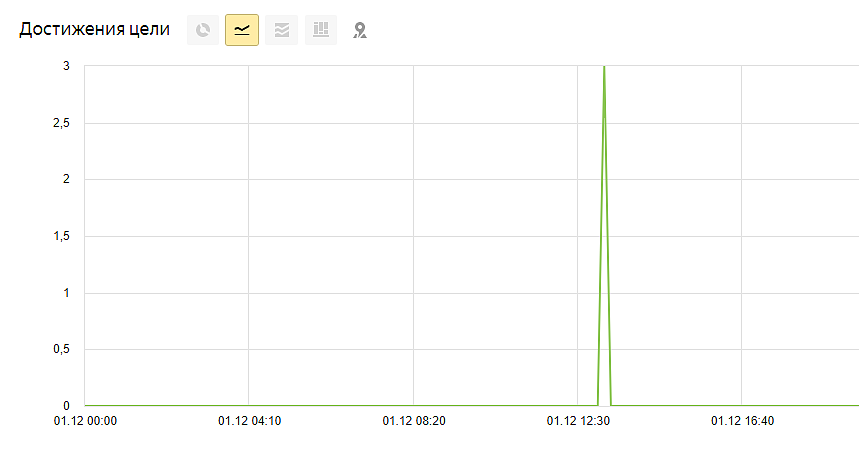
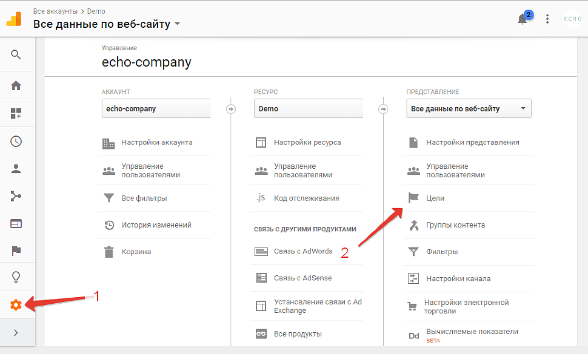
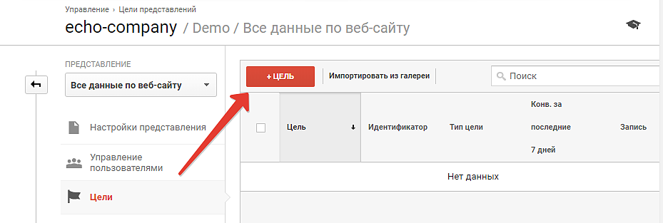
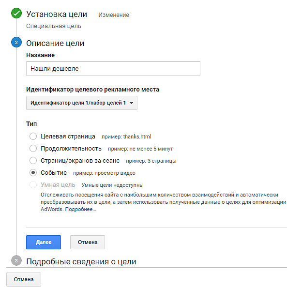
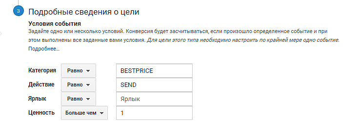
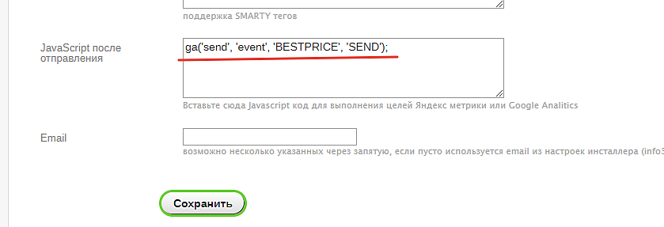
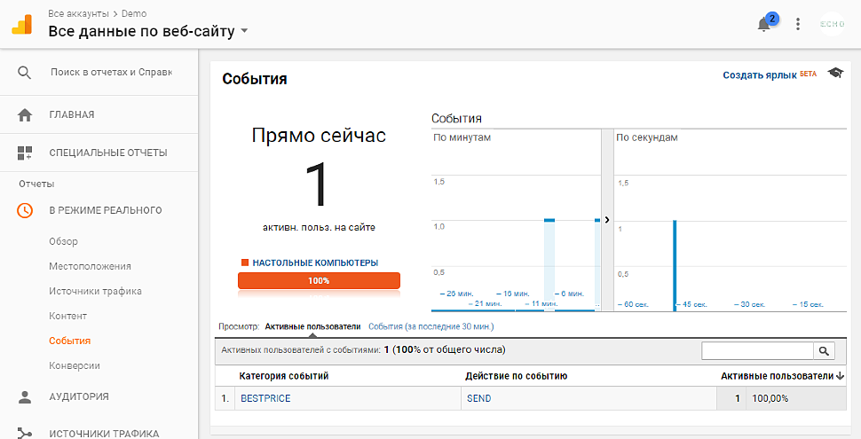

Настройка цели Яндекс Метрика
1) Зайдите под своим аккаунтом в список счетчиков Яндекс Метрики https://metrika.yandex.ru/list
2) Проверьте, что счетчик установлен и функционирует в штатном режиме
3) Перейдите в раздел Настройки->Цели и нажмите Добавить цель

4) В появившемся окне выберите тип JavaScript событие, укажите Название и Идентификатор цели BESTPRICE

5) Добавьте цель и сохраните основной идентификатор счетчика (изображен на скриншоте)

6) Перейдите на Ваш сайт в настройки плагина "Нашли дешевле" и в поле "JavaScript после отправления" добавьте следующий код:
yaCounterXXXXXX.reachGoal('BESTPRICE');
где:
- XXXXXX — номер вашего счетчика;
- BESTPRICE — введенный вами идентификатор цели.

Если Вы все сделали правильно данные начнут поступать в отчет достижения цели, следует учитывать что иногда данные приходят с небольшой задержкой (до получаса)

Настройка цели Google analytics
1) Войдите под своим логином в Google analytics https://analytics.google.com/analytics/web/
2) Перейдите на вкладку Цели

3) Нажмите создать Цель

4) В установках цели выберите "Собственная", укажите Название, тип выберите "Событие""

5) Укажите Категория - BESTPRICE, действие - SEN

6) Перейдите на Ваш сайт в настройки плагина "Нашли дешевле" и в поле "JavaScript после отправления" добавьте следующий код:
ga('send', 'event', 'BESTPRICE', 'SEND');

Если Вы все сделали правильно данные начнут поступать в отчет событий, проверить срабатывание цели можно в режиме реального времени

Плагин Нашли дешевле